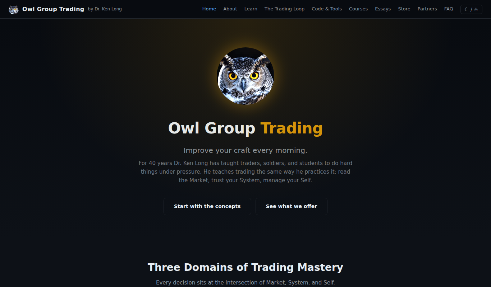
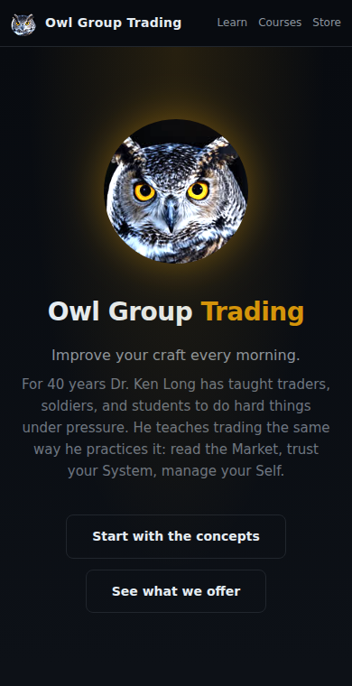
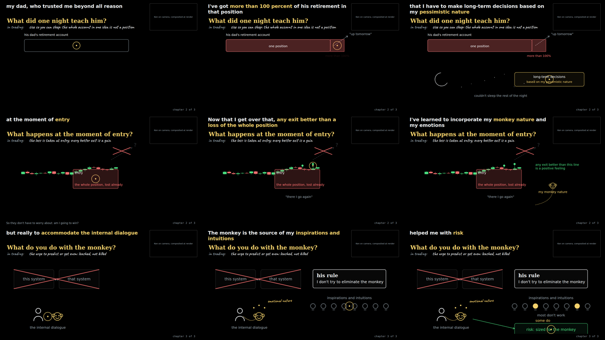
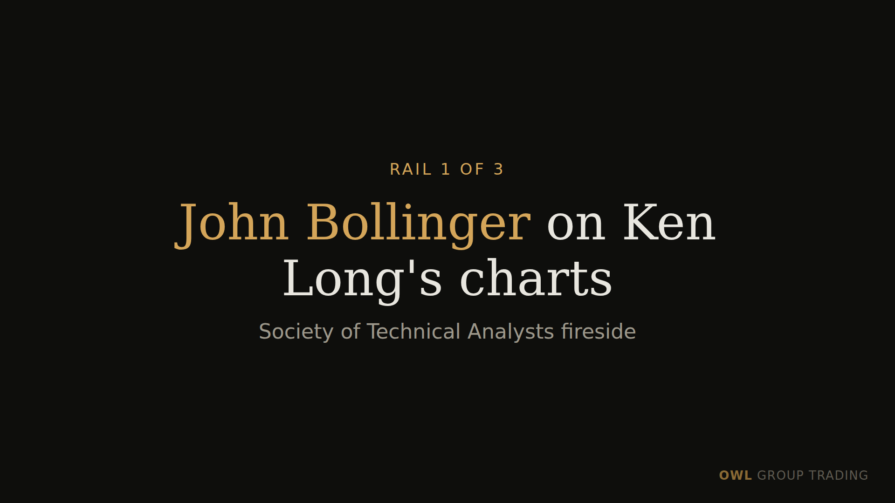
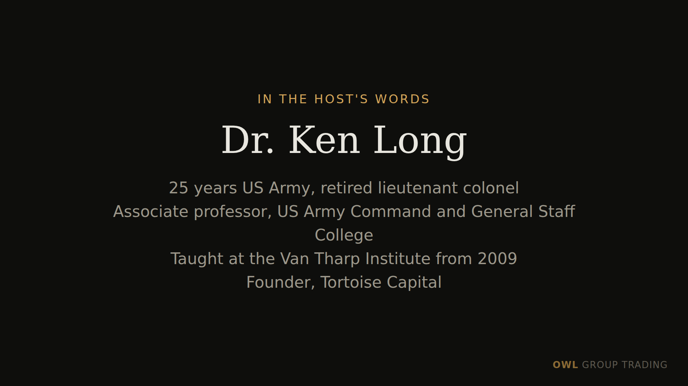
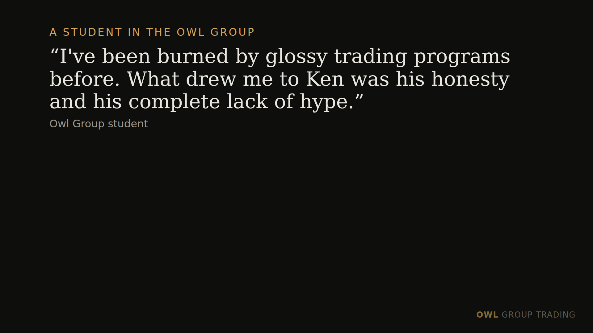
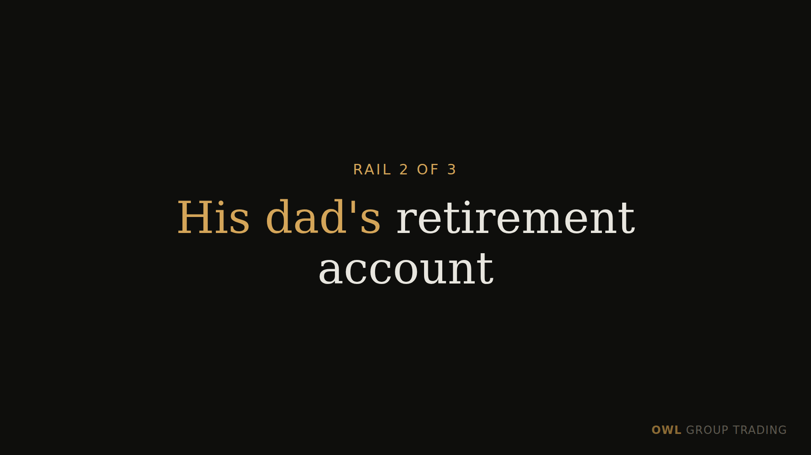
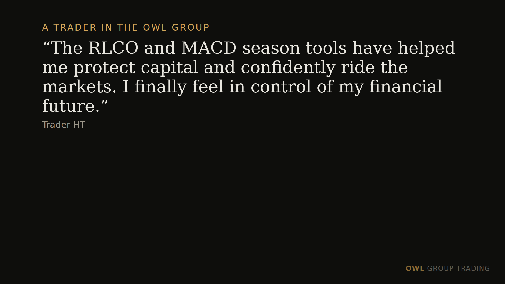
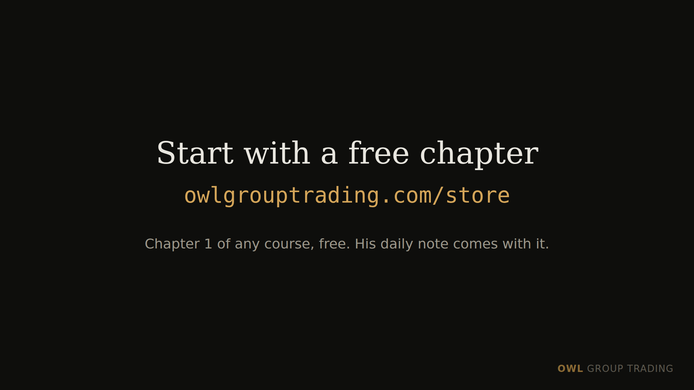

owlgrouptrading.com's home page carries three video cards five screens down: Ken's Daily Trading Plan, a favourites playlist, and John Bollinger on his charts. The proposal: one clip above the fold, drawn from a library we author and the owner approves, each clip built to climb one rung of a stranger's trust, each ending on the store, each scored on the purchases it leads to. The three first rails are cut and waiting in the cutroom.
A first-time visitor sees an owl, a name, and two buttons that sell nothing.


Hero (owl, title, tagline) → Market / System / Self triad → "Why Dr. Ken Long" (four credential cards) → From Dr. Long: three video cards → Trader Stories (six of ten approved testimonials) → Offerings → footer.
The three cards: Daily Trading Plan (YouTube, him doing what he does), Favorite Shorts Playlist (YouTube), John Bollinger on Ken Long's charts (a native video, live since 2026-11-20; Ken approved; the STA's reuse permission is still unsent).
Tracking today: every YouTube iframe and native video already emits video_playvideo_pausevideo_end on the site's event bus; the growth report counts plays per video id. Nothing ties a play to a purchase.
Store today: nine courses at $49 to $79, each with chapter 1 free on request (the request joins the daily note; day 7 and day 14 offers follow). The free chapter is the strongest low-risk first step the site has, and the home page never mentions it.
The player is the hero. The copy beside it answers "who is this?" in three lines. The button costs nothing.
A working replica: the player below rotates through real clips from the buckets (the course trailers, the Bollinger clip, his credentials clip), the "up next" strip swaps the clip, the testimonial under the fold follows the playing clip, and the event console shows what the page would send to the tracker. The owl moves to the topbar; the triad and the credential cards stay below the fold.
waiting for the first impression…
The player first, the button under it, before any text. On a 390 px screen the primary button is inside the first screen.
Nobody buys a course from a face. They buy after six questions are answered in order, and a clip can answer one or two of them well.
Every clip sells hard by selection: the strongest 30 to 60 seconds of a 90-minute tape, cut on full sentences, with the proof line on the poster frame. The words stay his. Cards say what a course is, who said what, and the price. No card paraphrases him or promises an outcome (sales-clip skill rule; content-rules.md).
The three themes map onto material already on tape: the method (react, don't predict; the pessimistic mind), the person (the monkey kept, not killed; "take the wheel"), the family (his dad's account; Trader HT's financial future; Trader ET's future on her own terms). Nothing has to be written for him.
No stock-footage lifestyle shots, no synthetic narration over him, no "limited seats", no testimonials beyond the ten he approved, no numbers that are not on tape (the retirement-account return figure is not; the 9-box model is not). STA material carries the STA attribution; nothing of the STA's goes public before they say yes.
Rights decide the launch order: everything the STA owns waits for one email; everything Ken owns can go live this week.
| id | clip | kind | source and window | s | rung | rights | state |
|---|
The file: ogt-coursecraft/devtimeartifacts/home-rail-2026-11-22/library.v1.json (a copy beside this page as library.v1.json). Rungs: 1 who is this · 2 is it real · 3 is he honest · 4 someone like me · 5 what it does to my life · 6 what it costs. Weights are starting guesses for the rotation; the tracking replaces them with numbers.
No cookie means a stranger: the page serves a "who is this" clip (the Bollinger collage while it is the only approved one; later a random pick among rung-1 clips by weight). The poster frame carries the clip's proof line and the source, so a visitor who never presses play still reads John Bollinger's sentence.
The cookie remembers the clips seen and the deepest rung watched to 50 %. A returning visitor gets the next rung up, never the same clip twice until the library is exhausted. After any play past 50 %, "up next" leads with the course trailer that matches, so the next click is a product.
A clip ships only with approved: true in the manifest, flipped by growogtx on the owner's word in the cutroom. ?rail=<id> previews one clip for the owner on the live page without changing anyone's cookie (the ?ab= pattern).
Recommended: a poster with a big play button, not muted autoplay. This audience distrusts motion that starts by itself, the play press is itself the first measured intent, and the captioned twins (the Bollinger one exists) serve the viewer who plays muted. An autoplay cohort can be tested after four weeks of baseline.
After 500 impressions, a clip in the bottom third on revenue per 100 impressions (then on CTA-click rate) leaves the rotation and the next approved clip takes its slot. Reviewed monthly in the growth report. A clip never retires on taste alone once it has numbers.
ogt-coursecraft authors and renders (mp4, poster jpg, captions vtt into the course bucket under rail/); growogtx approves and owns the copy around the player; edge-ogt-engine reads the manifest and serves. The manifest shape is below.
{ "id": "rail-02", "title": "His dad's retirement account", "kind": "collage: animated twin + cards",
"mp4": "rail/rail-02.mp4", "poster": "rail/rail-02.jpg", "captions": "rail/rail-02.vtt", "seconds": 60,
"rung": [5, 2], "rights": "sta", "approved": false, "weight": 3,
"poster_line": "“I had his entire retirement account in a position.”",
"cta": { "label": "Start with a free chapter", "href": "/store#free-chapter" },
"testimonial": "system-that-fits-me" }
The site already attributes purchases to a sales-page cohort through a cookie and Stripe metadata. The rail uses the same path with a second cookie.
| + clip_impression | clip_id, slot (hero | next), position, first_visit. Sent when the player is in view, once per clip per page. |
| video_play / pause / end | already emitted by the player code; gains clip_id. |
| + video_progress | clip_id, pct 25 | 50 | 75. The 50 % mark is the "watched" threshold. |
| + clip_cta_click | clip_id, target, pct_watched. The button under the player and the end-card link. |
| + cookie ogt_rail | {first, last, plays}. Read by the free-chapter form, by buy_now_click, and written into Stripe checkout metadata as rail_clip, beside ab_sales. |
| free_chapter_request | gains rail_clip from the cookie, so a request made the same day as a play is attributed. |
| impressions | hero + next, separately |
| play rate | plays ÷ hero impressions |
| watched | 50 % reached ÷ plays; finish rate beside it |
| CTA rate | clip_cta_click ÷ plays |
| free chapters | requests with rail_clip ÷ 100 plays |
| purchases | Stripe rows with rail_clip within 14 days ÷ 100 plays |
| revenue per 100 impressions | the ranking number; the retire rule reads it |
Honesty about sample size: I have not verified the home page's weekly visit count; the growth report has it. If it is in the low hundreds, a month separates play rate and CTA rate between clips but not purchases. The retire rule's 500-impression floor is set for that.
Admin: the numbers land in /admin/funnel-diagnostic.json first (the A/B pattern), a dashboard tab after the first month.
Cutroom ken-rail: three rails in one plan, the ken-shorts pattern. Every edge read off the cues; the owner trims to breath, flips cut or twin per segment, and drops the optional beat.
Card (3 s) → Bollinger, STA fireside clip 1:18.0 to 2:08.3: "To point out something about your friend Ken Long: I looked at a couple of his charts … a better chance that you've got something really robust on your hands" (50 s, verbatim, the STA frame kept; a shorter two-bite alternate is carried) → the host's facts card (6 s) → "What drew me to Ken was his honesty and his complete lack of hype." (8 s) → the store card (6 s).
Rungs 1 and 3. STA
Card → the night he could not sleep, 1:01:07 to 1:01:44, as the animated twin with his tile top-right (the ken-shorts scene on the stage: head "What did one night teach him?", bridge "size so you can sleep", a focus ring per beat; the cut is the alternate) → "I finally feel in control of my financial future." Trader HT (8 s) → optional: "React. Don't predict." 45:28 to 46:06 as its twin → the store card.
Rung 5, then 2. STA
Card → "Lesson learned was not so much this system versus that system … I don't try to eliminate the monkey. The monkey is the source of my inspirations and intuitions. Most of them don't work, but some of them do … helped me with risk." 1:03:57 to 1:04:23, a new stage scene (two systems crossed out, the monkey kept beside the trader, his ideas as bulbs with two lit, his rule boxed, the risk box it feeds) → "Trading used to feel like gambling. Then I found Ken's systems." Trader BL → the store card.
Rungs 3 and 4. STA







Rights flag. All three rails and the live Bollinger card are the Society of Technical Analysts' recordings. One email covers both sources; a draft is in the note beside this page. Until the STA answers, the rail can launch on Ken-owned clips alone (the six course trailers, the credentials clip), and the Bollinger card that is already live is the owner's call.
The owner's cutroom pass on ken-rail → cutroom-intake → render per rail (one mp4 per chapter card is a small build_v2 addition, open since ken-shorts) → poster jpg from the proof-line frame, captions vtt → upload to the course bucket under rail/ → the manifest rows. Then the next rails from Ken-owned sources (why I teach; the Hougaard R session; the 4-3-2-1 position sizing talk).
site_pages.py: the hero becomes the two-column fold (player + copy + buttons), the three cards go, the owl shrinks to the topbar; a rail module reads the manifest, picks by cookie, emits the new events; products.py and free_chapter.py read ogt_rail into checkout metadata and the request row; growth_report.py gains the Home rail block. /store gains a free-chapter strip at the top (today the form lives only on each course page), so /store#free-chapter has somewhere to land.
Sends the STA ask; approves clips in the manifest on the owner's word; owns the headline and the three proof lines (drafted here, in the fold); the "quiet offers" line in the daily note can point at a rail clip's course page once attribution works.
Replace the hero with the player-plus-copy fold above and drop the three cards section. Recommended. Alternative: keep the hero, put one rail player where the three cards are (cheaper, five screens down, little change in behaviour).
"Start with a free chapter" first, "Browse the courses" second. Recommended: the free chapter is the lowest-cost yes the site has and it already joins the daily note. Alternative: the store first.
Click to play with the proof line on the poster, then test autoplay as a cohort after four weeks.
Send it now, one email for both recordings (draft in the note). Until the answer: launch on Ken-owned clips, and decide whether the Bollinger card that is already live stays up.
60 s (the dad, a student, the store) or 100 s with "React. Don't predict." Recommended: 60 s; the react bite becomes its own rail.
Drafted in the fold ("He taught Army officers to decide under pressure…"). growogtx owns the final words; say if the register is right.
Initials as approved (Trader BL, HT, ET, "Owl Group student"), or ask the three for first names and a photo for the cards and the "what traders say" band.
The six course trailers exist; four are rendered from the owner's pass, two are at a revision he has not blessed. Which go in on day one?
500 impressions, bottom third on revenue per 100 impressions, monthly. Change the floor if home-page traffic is smaller than that in a month.